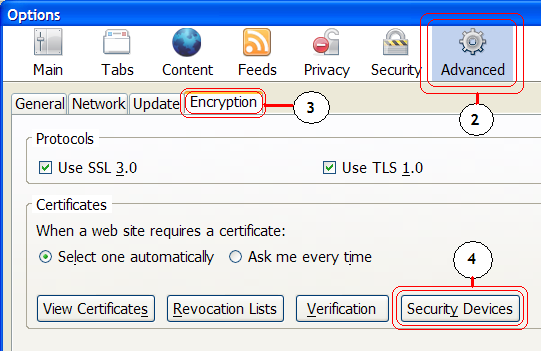
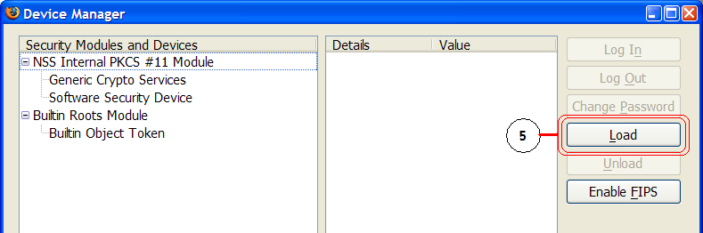
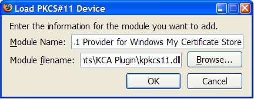

When you obtain a KCA certificate with the Kerberized Certificate Authority Provider for Network Identity Manager, it places the certificate in the Windows "My" Certificate Store, which is the default location for storing personal certificates. Applications that make use of the Windows certificate store will be able to immediately use the certificate. However, the Mozilla family of products don't use the Windows certificate store by default.
The KCA provider is bundled with a PKCS #11 module for Mozilla products that exposes the Windows certificate store. This allows Mozilla products to use these certificates transparently. At the current time, this module needs to be manually added to each Mozilla application that you would like to use with KCA certificates. This page provides information for installing the module for various Mozilla products.
Note: The PKCS #11 module exposes all the certificates in the Windows "My" certificate store, not just the KCA certificates.
This document provides installation instructions for the following products:
Select Tools -> Options... from the menu bar to access the Options dialog.
Select the Advanced icon to access the advanced options pane. (pictured below). 
Picture 1: The advanced options dialog in Firefox 2 with the Encryption tab selected.
Select the Encryption tab.
Select the Security Devices button to access the security device manager (pictured below). 
Picture 2: The Security Device Manager.
Select the Load button to load a new PKCS #11 device.
Enter the details for the new PKCS #11 device as shown below. For the module filename, select kpkcs11.dll from the directory that you installed the KCA provider to. By default, this is in the %PROGRAMFILES%\Secure Endpoints\KCA Plugin\ directory.
